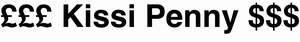

Trade Mark Journal No.2025/021 23 May 2025
UK00004199954 7 May 2025 (14,25,40)
Mark 1
£££ Kissi Penny $$$
Mark 2
£££ KISSI PENNY $$$
Mark 3
£££ Kissi Pennies $$$
Mark 4

- Class 14
- Jewellery; Jewellery, including imitation jewellery and plastic jewellery; Wristlets [jewellery]; Shoe jewellery; Pewter jewellery; Jewellery articles; Necklaces [jewellery]; Precious jewellery; Gold jewellery; Hat jewellery; Jewellery products; Jewellery chain; Jewellery foot chains; Jewellery boxes [fitted]; Body costume jewellery; Jewellery incorporating diamonds; Wooden jewellery boxes; Rings being jewellery; Gold plated brooches [jewellery]; Jewellery of yellow amber; Jewellery containing gold; Sterling silver jewellery; Jewellery boxes of precious metals; Jewellery fashioned from bronze; Gold thread [jewellery, jewelry (Am.)]; Jewellery made from silver; Jewellery made of bronze; Medallions [jewellery, jewelry (Am.)]; Presentation boxes for jewellery; Lapel pins of precious metals [jewellery].
- Class 25
- Clothes; Clothing; Layettes [clothing]; Jackets [clothing]; Kerchiefs [clothing]; Chaps (clothing); Maternity clothing; Muffs [clothing]; Capes (clothing); Motorists clothing; Boas [clothing]; Slips [clothing]; Veils[clothing]; Wraps [clothing]; Athletic clothing; Triathlon clothing; Windproof clothing; Silk clothing; Work clothes; Woollen clothing; Ladies clothing; Latex clothing; Wristbands [clothing]; Tops [clothing]; Knitted clothing; Oilskins [clothing]; Motorcyclists clothing; Hoods [clothing]; Leisure clothing; Infant clothing; Children boys and girls clothing; Children's clothing; Sports clothing; Leather clothing; Gloves [clothing]; Waterproof clothing; Plush clothing; Girls & clothing; Swaddling clothes; Knitwear [clothing]; Cloth bibs; Cyclists clothing; Playsuits [clothing]; Slipovers [clothing]; Jerseys [clothing]; Weatherproof clothing; Casual clothing; Denims [clothing]; Combinations [clothing]; Furs [clothing]; Shorts [clothing]; Collars [clothing]; Babies clothing; Ties [clothing]; Outer clothing; Cashmere clothing; Bandeaux [clothing]; Women & Girls clothing; Men & Boys clothing; Bodies [clothing]; Embroidered clothing; Printed t-shirts.
- Class 40
- Printing; Printing (Pattern); Printing (Photographic); Photogravure printing; Screen printing; Portrait printing; Offset printing; Wool printing; Intaglio printing; Silkscreen printing; Textile printing; Letterpress printing; Pattern printing; Lithographic printing; Discharge printing; Photographic printing; Photo printing; Printing (Lithographic); Printing (Offset); Printing services; Digital printing; 3D printing; Film printing (Photographic); Print finishing services; Offset printing services; Stationery printing services; 3D printing services.
Everton Wright Ltd